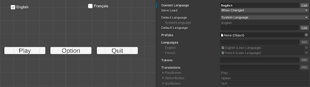
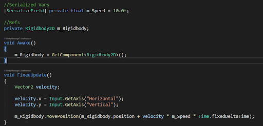

The first week we had a brainstorm for game design. We discussed the possibility of developing VR, 3D, and 2D games. Based on the resources including time and knowledge we have, we agreed to make a 2D game and have Overcooked2 and Turn The Line as references to build our game. And we had our Game Design Document done as a blueprint to build our game.
We all have different passions we hope to focus on such as art(Ethan), programming(Me and Stel), audio design(Dorian) and UI/UX design (Joshua). We encourage our team members to break the role, so we can all try different parts of game development. We decided to work on the Microsoft Dev-Ops system since our team member Stel has some good experience project management.
In these two weeks, I had learned how to use the Dev-Ops System, how to set hooks so every update on GitHub and Dev-Ops can be shown on our Discord Team. I had also learned how to build the localization system so we can have our game in English and French.
I used LeanLocalization, an asset on the Unity store, to have the localization system work. I asked for advice from our mentors from SnowedIn Studio to improve my codes. I will try to put the localization manager into one script, so later it will be easier to modify, improve, and expand the content.
I had made a script to add the feature of moving. Stel shared some thoughts with me to improve my code, like using the local variables if they are only used locally.
I think I will keep working on the programming part and in the meantime, I am also interested in building art assets. I think I will put some work into making art assets in the upcoming week.